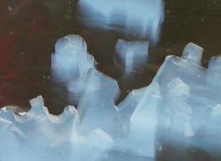

|
|
Navig.
page/section


_____
|
|
Pages soeurs
I, A propos des liants
II, Bulles, siccativ., struct. élec.
III, Caséine, phosphore, dissociation
IV, Les orbitales
V, L'aérogel
VI, Polarisation de la lumière
VII, Sfumato et diffusion Rayleigh
VIII, Les interférentielles
IX, Dextrine, farine et chiralité
X, L'ocre bleue
XI, Les métamatériaux
XII, Le jaunissement
XIII, Laser etc.
XIV, L'holographie
XV, L'holographie numérique
XVI, Extérieur, intérieur, chaux
XVII, L'électrolyse et les ions
XVIII, L'électricité, un peu plus loin
XIX, Oxydation, métaux
XX, Les échelles
XXI, Nature et évolution des résines
XXII, Le mouillage pigmentaire
XXIII, La molette
XXIV, Blanche neige
XXV, Lumière et matière
XXVI, Magnétisme
XXVII, Ambre et vieilles branches
XXVIII, L'origami miroir
XXIX, Le feu
XXX, Peau du métal
XXXI, La ville en un souffle
XXXII, Oxyder des matériaux
XXXIII, Ocre bleue, une solution
_____
|
Copyright © www.dotapea.com
Tous droits réservés.
Précisions cliquer ici
|
|
| |
|
|
Les
dialogues sur la physique-chimie
appliquée
aux arts
Chapitre V
L'aérogel
|
 |
dial dial
dial
Ce chapitre des
Dialogues de Dotapea
est
une discussion entre Jean-Louis, physico-chimiste au CNRS, et un
candide, Emmanuel.
Les personnages sont réels, la
discussion aussi. Elle peut reprendre à tout moment et ce texte peut s'allonger.
Pour preuve, un ajout a été réalisé en fin d'article.
Il concerne une nouvelle catégorie de gels.
Cliquer ici
|
Nous parlons dans ce chapitre d'un produit très
particulier :
|
Ne cherchez pas ce matériau étrange dans les commerces
classiques, c'est
inutile du moins pour le moment car il ne s'agit encore que de substances qui ne
franchissent que rarement les murs des centres de recherches pour être
intégrés typiquement dans des engins spatiaux. Une référence peut aider
cependant,
cliquer ici.
Ce sujet a de quoi faire rêver plus d'un
plasticien et peut-être l'aérogel deviendra-t-il demain un produit familier.
Son aspect irréel méritait un petit apparte dans les dialogues de
Dotapea, c'est ce que nous avons pensé. Pour le rêve. |
Une utilisation combinée de l'aérogel, du laser et de la vidéo est présentée
dans le court-métrage
"Laser, matériau transparent et vidéo" (cliquer
ici)
|
|
|
|
|
Jean-Louis : C'est un solide. D'ailleurs formé par la
polymérisation de
silice colloïdale. On fait
un gel de silice avec des petites particules dispersées dans du solvant, on
évapore le solvant dans des conditions particulières et on obtient un
aérogel. Objet bizarre qui peut contenir jusqu'à 98% d'air et rester
néanmoins solide !
Les aérogels ne sont pas très faciles à produire en grandes dimensions. On
commence par former un gel contenant du méthanol...
Emmanuel : Du méthanol ? Parce que c'est un
produit plutôt volatil peut-être ?
Jean-Louis : On utilise le méthanol parce que
1) c'est un solvant du produit de départ et 2) son
point critique
(240°C et 80 atmosphères, après vérification) est accessible.

On emploie des autoclaves qui n'ont rien de particulier. Il faut juste
qu'ils supportent la pression et la température. Pour faire des petits
aérogels on utilise généralement une "bombe" que l'on place dans un four. La
bombe est un petit conteneur en acier spécial résistant à la pression et
dans lequel on place le gel de méthanol et de silice. C'est plus simple et
moins dangereux que de construire et de mettre sous pression tout un four.
En théorie, on peut fabriquer un
morceau d'aérogel aussi grand que l'on veut, pas de problème. Mais ensuite
si on le laisse sécher, les forces
capillaires exercées par le solvant qui s'évapore détruisent la
structure solide qui est très fragile. Alors on place le gel dans un
autoclave et on le sèche dans des conditions dites "critiques". Dans ces
conditions le méthanol ne possède plus de
tension superficielle et peut donc sortir du gel sans tout casser. Cela
prend un certain temps (quelques jours) et il faut un autoclave de grande
taille si l'on veut réaliser des grands échantillons.

[note : le flou ne provient pas de la prise de vue]
Emmanuel : Peux-tu en dire davantage sur ce
matériau étrange qui est le plus léger solide que l'être humain ait
produit ?
Jean-Louis : Les aérogels sont d'aspect
bizarre, très légers, bien sûr, et très isolants thermiquement et
acoustiquement. Ils peuvent être transparents et on a envisagé à une époque
d'en incorporer dans les vitrages.

[note : l'aérogel est légèrement jaune par
transparence]
Emmanuel :
Je n'ai pas trouvé d'informations concernant son point de fusion. Il
doit être élevé puisque l'une de ses utilisations consiste à piéger et
conserver à peu près intactes des particules très rapides (poussières de
chevelure cométaire dans le cas de la sonde Stardust).
Jean-Louis : Le point de fusion des aérogels est celui de la silice,
au dessus de 1 000°C.
Les structures les plus denses
d'un aérogel sont des sphères non poreuses, de diamètre inférieur à 1nm, de
densité égale à celle de la silice ordinaire (verre de silice).
Ces particules primaires se
regroupent pour former des particules secondaires poreuses, d'environ 2 nm
de diamètre, deux fois moins denses qu'un verre de silice. Enfin, l'aérogel
proprement dit est une structure extrêmement poreuse constituée de branches
de silice connectées aléatoirement. La taille moyenne des branches est de
l'ordre de 6 nm. A titre indicatif, un aérogel de densité 0,25 possède des
pores de taille moyenne 40 nm.
Emmanuel :
Est-ce que l'on peut ajouter des oxydes métalliques pour obtenir un
aérogel coloré ou luminescent ?
Jean-Louis : Tout à fait !
|
|
L'aérogel, composé de silice cuite, est une
forme de verre minéral.
Cependant, il s'agit aussi d'une appellation
générique qui correspond à tout gel (siliceux ou non) où l'air est le
milieu dominant, de même qu'il existe des hydrogels, des alcoogels, etc. |
|
Notes
L'aérogel est d'aspect extrêmement changeant en
fonction de l'éclairage, c'est en fait la raison majeure (mais pas la
seule) pour laquelle nous avons choisi d'en parler sur ce site. Le voici
donc sous différentes apparences.
Bien visible :
Plus discret, mais toujours capable de renvoyer
une certaine quantité de lumière :
|
|
|
|
Sous certains angles, les contours semblent
s'estomper. On obtient alors des effets très peu ordinaires !
Ci-dessous, on frôle l'invisibilité. Sur l'image de droite, on remarque
également de curieux effets de fusion des contours cette fois avec un
fond noir.
Les contours se situent en fait ici :

L'aérogel renvoie une lumière bleue blanchâtre par
réflexion (notamment quand le fond est sombre), et jaune par
transparence :
Une autre des propriétés de l'aérogel est de bien
diffuser la lumière (ici sur une lampe de poche) :

Sur le plan plastique...
Pour ce qui concerne l'aérogel classique (voir
détails ci-dessous).
Il est friable. Le prendre en ses doigts, c'est
déjà le mettre à l'épreuve.
Pour le tailler, un
plasticien aurait intérêt à travailler par abrasion et/ou par polissage
à l'aide d'outils fins. Sans quoi il faut envisager de la casse. Mais la
casse peut aussi être présenter un certain intérêt.
Il ne faut pas oublier qu'il s'agit du matériau
solide le plus léger qui soit. Cet aspect extraordinaire peut également
être utilisé dans des réalisations artistiques ou décoratives. Posons-le
sur un liquide, plaçons-le dans un courant d'air...
|
|
 |
|
Complément : le
xérogel-éponge
Une innovation probablement majeure dans le
domaine des gels a été apportée par Kazuoshi Kanamori, Kazuki Nakanishi
et Teiichi Hanada (université de Kyoto) et Mamoru Aizawa (Dynax Corp.).
Sa portée est à ce jour difficile à calculer. Jean-Louis nous explique
de quoi il s'agit en resituant la découverte dans son contexte :
Les aérogels sont formés en
solution par polymérisation d'un précurseur
de type silicate (e.g. tétraméthylorthosilicate), ce qui donne un gel.
Si on laisse sécher sans précautions ce gel (qui peut contenir jusqu'à
98% de liquide) on obtient un xérogel, un matériau poreux très
dense.
Lors du
séchage les forces capillaires font s'effondrer la structure originelle
du gel et les atomes de silice des parois forment des liaisons
covalentes qui bloquent la structure. Si on sèche le gel dans des
conditions
critiques, on peut éliminer tout le solvant sans briser la
structure, on a alors l'aérogel, qui contient jusqu'à 98% d'air. Ces
matériaux sont très fragiles, coûtent cher et ne peuvent pas être
fabriqué en grandes dimensions.
Si
on introduit des molécules hydrophobes dans la structure initiale du
gel, les parois ne peuvent pas se réticuler
lors du séchage, ce qui fait que le gel obtenu est
élastique, si on le comprime il reprend sa forme initiale.
L'équipe japonaise a réalisé des xérogels
élastiques, mais aussi des aérogels ayant la même propriété. |
|
Ajout 2007 |
|
La suite : chapitre VI |
Retour
début de page
|
|

 Communication
Communication


|
|